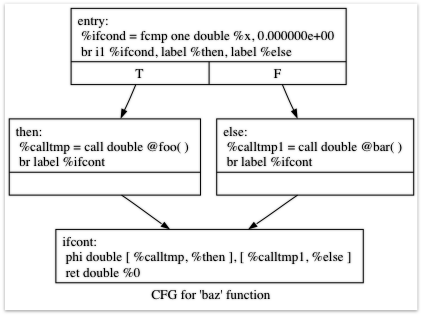

根据 LLVM 官方第 5 章翻译（原文获取日期：2026-11-10）。正文与各节说明译为中文；C++、LLVM IR、命令及输出完整保留原文。版式参考本项目第 3 章。原文可能使用比本项目 LLVM 18 更新的 API，应配合所安装版本的教程阅读；本页代码不是当前主程序已实现功能的声明。
欢迎来到《使用 LLVM 实现一门语言》第五章。前四章实现了简单的 Kaleidoscope 语言，支持生成 LLVM IR、优化和 JIT 编译。不过，它目前除了调用与返回之外没有控制流，无法编写条件分支，表达能力受到很大限制。本章将加入 if/then/else 表达式和简单的 for 循环。
加入 if/then/else 的过程很直接：让词法分析器、语法分析器、AST 和 LLVM 代码生成器支持这个新概念。这个例子展示了如何随着新想法的出现，逐步扩展一门语言。
在讨论如何实现之前，先明确希望支持的写法：
def fib(x)
if x < 3 then
1
else
fib(x-1)+fib(x-2);
Kaleidoscope 的所有构造都是表达式，没有语句，因此 if/then/else 也必须返回一个值。沿用偏函数式的形式，我们先计算条件，再根据结果返回 then 或 else 分支的值，类似 C 的 ?: 表达式。
条件值用于决定真假：0.0 视为假，其他值视为真。条件为真时只计算并返回第一个子表达式，否则只计算并返回第二个。由于 Kaleidoscope 允许副作用，明确这种选择性求值行为十分重要。
明确目标后，把实现分解为几个部分。
首先为相关 token 添加枚举值：
// control
tok_if = -6,
tok_then = -7,
tok_else = -8,
然后在词法分析器中识别这些新关键字：
...
if (IdentifierStr == "def")
return tok_def;
if (IdentifierStr == "extern")
return tok_extern;
if (IdentifierStr == "if")
return tok_if;
if (IdentifierStr == "then")
return tok_then;
if (IdentifierStr == "else")
return tok_else;
return tok_identifier;
添加一个 AST 节点，表示这种新表达式：
/// IfExprAST - Expression class for if/then/else.
class IfExprAST : public ExprAST {
std::unique_ptr<ExprAST> Cond, Then, Else;
public:
IfExprAST(std::unique_ptr<ExprAST> Cond, std::unique_ptr<ExprAST> Then,
std::unique_ptr<ExprAST> Else)
: Cond(std::move(Cond)), Then(std::move(Then)), Else(std::move(Else)) {}
Value *codegen() override;
};
该节点只需要保存各子表达式的指针。
词法分析器已经能提供相关 token，也有了可构建的 AST 节点，解析逻辑就很直接了。先定义新的解析函数：
/// ifexpr ::= 'if' expression 'then' expression 'else' expression
static std::unique_ptr<ExprAST> ParseIfExpr() {
getNextToken(); // eat the if.
// condition.
auto Cond = ParseExpression();
if (!Cond)
return nullptr;
if (CurTok != tok_then)
return LogError("expected then");
getNextToken(); // eat the then
auto Then = ParseExpression();
if (!Then)
return nullptr;
if (CurTok != tok_else)
return LogError("expected else");
getNextToken();
auto Else = ParseExpression();
if (!Else)
return nullptr;
return std::make_unique<IfExprAST>(std::move(Cond), std::move(Then),
std::move(Else));
}
再把它接入基本表达式的分派：
static std::unique_ptr<ExprAST> ParsePrimary() {
switch (CurTok) {
default:
return LogError("unknown token when expecting an expression");
case tok_identifier:
return ParseIdentifierExpr();
case tok_number:
return ParseNumberExpr();
case '(':
return ParseParenExpr();
case tok_if:
return ParseIfExpr();
}
}
解析和 AST 构建完成后，最后一步是生成 LLVM IR。这是本例最有意思的部分，因为将引入新概念；前面的改动都沿用了此前章节的方法。
先通过一个简单例子了解希望生成的代码：
extern foo();
extern bar();
def baz(x) if x then foo() else bar();
关闭优化时，稍后 Kaleidoscope 将生成如下 IR：
declare double @foo()
declare double @bar()
define double @baz(double %x) {
entry:
%ifcond = fcmp one double %x, 0.000000e+00
br i1 %ifcond, label %then, label %else
then: ; preds = %entry
%calltmp = call double @foo()
br label %ifcont
else: ; preds = %entry
%calltmp1 = call double @bar()
br label %ifcont
ifcont: ; preds = %else, %then
%iftmp = phi double [ %calltmp, %then ], [ %calltmp1, %else ]
ret double %iftmp
}
可以利用 opt 的图形显示功能查看控制流图。把 IR 存入 t.ll，运行“llvm-as < t.ll | opt -passes=view-cfg”，便可弹出显示此图的窗口：

控制流图示例
也可以调用 F->viewCFG() 或 F->viewCFGOnly()，其中 F 是 Function*。既可以把调用写入源码并重新编译，也可以在调试器中调用。LLVM 提供了多种图结构可视化功能。
生成的代码并不复杂：entry 块计算条件表达式，此处为 x，然后用 fcmp one 与 0.0 比较。one 表示“有序且不相等”（Ordered and Not Equal）。根据比较结果，跳到包含真假分支表达式的 then 或 else 块。
then 和 else 执行结束后都跳到 ifcont 块，继续执行条件表达式之后的代码。本例只剩返回调用者。问题是：如何知道应当返回哪个表达式的值？
答案是 SSA 中重要的 Phi 操作。如果不熟悉 SSA，可先阅读相关入门材料。简单说，Phi 根据控制流从哪个前驱块到达，选择相应输入值：从 then 块进入时取 calltmp，从 else 块进入时取 calltmp1。
你可能担心：为了使用 LLVM，前端是否必须实现 SSA 构造算法？并非如此，除非理由非常充分，否则不建议在前端自行实现。常见命令式语言中，可能需要 Phi 的值大致有两类：
涉及用户变量的代码，例如 x = 1; x = x + 1;
AST 结构中隐含的值，例如本例中条件表达式的合并结果。
第七章“可变变量”将详细处理第一类情况，无需前端自行构造 SSA。第二类既可采用第七章的方法，也可以在方便时直接插入 Phi。本例中的 Phi 很容易生成，因此选择直接构建。
背景介绍到此，开始生成代码！
实现 IfExprAST 的 codegen 方法：
Value *IfExprAST::codegen() {
Value *CondV = Cond->codegen();
if (!CondV)
return nullptr;
// Convert condition to a bool by comparing non-equal to 0.0.
CondV = Builder->CreateFCmpONE(
CondV, ConstantFP::get(*TheContext, APFloat(0.0)), "ifcond");
这与之前的代码类似：先生成条件表达式，再与零比较，得到一个 1 位布尔值。
Function *TheFunction = Builder->GetInsertBlock()->getParent();
// Create blocks for the then and else cases. Insert the 'then' block at the
// end of the function.
BasicBlock *ThenBB =
BasicBlock::Create(*TheContext, "then", TheFunction);
BasicBlock *ElseBB = BasicBlock::Create(*TheContext, "else");
BasicBlock *MergeBB = BasicBlock::Create(*TheContext, "ifcont");
Builder->CreateCondBr(CondV, ThenBB, ElseBB);
接着创建与 if/then/else 对应的基本块，与前面的 IR 示例一一对应。第一行通过 Builder 当前的 BasicBlock 取得其父对象，也就是正在构建的 Function。
随后创建三个块。创建 then 块时传入 TheFunction，因此构造函数自动把它追加到函数末尾；另外两个块暂时只创建，不加入函数。
创建块后，生成选择 then 或 else 的条件分支。创建基本块不会改变 IRBuilder 的插入位置，所以分支仍插入条件表达式所在的块。此时 else 还没有加入函数，但分支可以先引用它；这是 LLVM 支持前向引用的正常方式。
// Emit then value.
Builder->SetInsertPoint(ThenBB);
Value *ThenV = Then->codegen();
if (!ThenV)
return nullptr;
Builder->CreateBr(MergeBB);
// Codegen of 'Then' can change the current block, update ThenBB for the PHI.
ThenBB = Builder->GetInsertBlock();
条件分支插入后，把 Builder 的插入点移到 then 块末尾。由于它还是空块，这里同时也是块的起点。
递归生成 then 表达式后，用无条件分支跳到合并块。LLVM IR 要求每个基本块都以 return、branch 等控制流终结指令结束；即便是顺序落入下一块，也必须显式表示。违反这一规则，验证器就会报错。
最后一行重新读取当前基本块非常关键。合并块中的 Phi 需要为控制流图里的每个前驱块设置“块—值”对。虽然前面刚把插入点设为 ThenBB，但 then 表达式自身可能包含嵌套 if/then/else，递归 codegen() 会改变当前块。因此创建 Phi 前必须取得最新的实际前驱块。
// Emit else block.
TheFunction->insert(TheFunction->end(), ElseBB);
Builder->SetInsertPoint(ElseBB);
Value *ElseV = Else->codegen();
if (!ElseV)
return nullptr;
Builder->CreateBr(MergeBB);
// codegen of 'Else' can change the current block, update ElseBB for the PHI.
ElseBB = Builder->GetInsertBlock();
else 的生成与 then 基本相同，主要区别是第一行将此前尚未挂接的 else 块加入函数。两个分支生成完毕后，处理合并部分：
// Emit merge block.
TheFunction->insert(TheFunction->end(), MergeBB);
Builder->SetInsertPoint(MergeBB);
PHINode *PN =
Builder->CreatePHI(Type::getDoubleTy(*TheContext), 2, "iftmp");
PN->addIncoming(ThenV, ThenBB);
PN->addIncoming(ElseV, ElseBB);
return PN;
}
前两行分别把合并块加入 Function，并将插入点移到该块。随后创建 PHI 节点，设置来自各前驱块的输入值。
最后返回 Phi 节点，作为 if/then/else 表达式的计算结果。在前面的例子里，函数代码生成会使用这个值创建返回指令。
现在 Kaleidoscope 可以执行条件代码了，已经能够表示多种数值函数。接下来再加入一个非函数式语言中常见的表达式。
掌握基本控制流的实现后，可以进一步加入 for 表达式：
extern putchard(char);
def printstar(n)
for i = 1, i < n, 1.0 in
putchard(42); # ascii 42 = '*'
# print 100 '*' characters
printstar(100);
该表达式定义一个新变量，此处为 i，从初值开始迭代，并按可选步长递增。示例的继续条件为 i < n，步长为 1.0；省略步长时默认使用 1.0。循环执行其主体，并根据条件决定是否继续。当前没有更合适的返回值，因此规定循环始终返回 0.0。加入可变变量后，它会更有用。译注：下方实现先执行循环体，再检查继续条件，循环体至少执行一次。
同样，先逐项讨论需要对 Kaleidoscope 做出的改动。
词法扩展与 if/then/else 类似：
... in enum Token ...
// control
tok_if = -6, tok_then = -7, tok_else = -8,
tok_for = -9, tok_in = -10
... in gettok ...
if (IdentifierStr == "def")
return tok_def;
if (IdentifierStr == "extern")
return tok_extern;
if (IdentifierStr == "if")
return tok_if;
if (IdentifierStr == "then")
return tok_then;
if (IdentifierStr == "else")
return tok_else;
if (IdentifierStr == "for")
return tok_for;
if (IdentifierStr == "in")
return tok_in;
return tok_identifier;
AST 节点也很简单，只需保存变量名及构成循环的各个表达式。
/// ForExprAST - Expression class for for/in.
class ForExprAST : public ExprAST {
std::string VarName;
std::unique_ptr<ExprAST> Start, End, Step, Body;
public:
ForExprAST(const std::string &VarName, std::unique_ptr<ExprAST> Start,
std::unique_ptr<ExprAST> End, std::unique_ptr<ExprAST> Step,
std::unique_ptr<ExprAST> Body)
: VarName(VarName), Start(std::move(Start)), End(std::move(End)),
Step(std::move(Step)), Body(std::move(Body)) {}
Value *codegen() override;
};
解析代码基本沿用惯例。值得关注的是可选步长：检查是否出现第二个逗号，若没有，就把 AST 中的步长指针设为空。
/// forexpr ::= 'for' identifier '=' expr ',' expr (',' expr)? 'in' expression
static std::unique_ptr<ExprAST> ParseForExpr() {
getNextToken(); // eat the for.
if (CurTok != tok_identifier)
return LogError("expected identifier after for");
std::string IdName = IdentifierStr;
getNextToken(); // eat identifier.
if (CurTok != '=')
return LogError("expected '=' after for");
getNextToken(); // eat '='.
auto Start = ParseExpression();
if (!Start)
return nullptr;
if (CurTok != ',')
return LogError("expected ',' after for start value");
getNextToken();
auto End = ParseExpression();
if (!End)
return nullptr;
// The step value is optional.
std::unique_ptr<ExprAST> Step;
if (CurTok == ',') {
getNextToken();
Step = ParseExpression();
if (!Step)
return nullptr;
}
if (CurTok != tok_in)
return LogError("expected 'in' after for");
getNextToken(); // eat 'in'.
auto Body = ParseExpression();
if (!Body)
return nullptr;
return std::make_unique<ForExprAST>(IdName, std::move(Start),
std::move(End), std::move(Step),
std::move(Body));
}
再次把它接入基本表达式分派：
static std::unique_ptr<ExprAST> ParsePrimary() {
switch (CurTok) {
default:
return LogError("unknown token when expecting an expression");
case tok_identifier:
return ParseIdentifierExpr();
case tok_number:
return ParseNumberExpr();
case '(':
return ParseParenExpr();
case tok_if:
return ParseIfExpr();
case tok_for:
return ParseForExpr();
}
}
接下来看看希望生成的 LLVM IR。前面的简单循环会得到如下结果，为清晰起见关闭了优化：
declare double @putchard(double)
define double @printstar(double %n) {
entry:
; initial value = 1.0 (inlined into phi)
br label %loop
loop: ; preds = %loop, %entry
%i = phi double [ 1.000000e+00, %entry ], [ %nextvar, %loop ]
; body
%calltmp = call double @putchard(double 4.200000e+01)
; increment
%nextvar = fadd double %i, 1.000000e+00
; termination test
%cmptmp = fcmp ult double %i, %n
%booltmp = uitofp i1 %cmptmp to double
%loopcond = fcmp one double %booltmp, 0.000000e+00
br i1 %loopcond, label %loop, label %afterloop
afterloop: ; preds = %loop
; loop always returns 0.0
ret double 0.000000e+00
}
这里仍然由之前见过的元素组成：Phi 节点、若干表达式和基本块。下面将它们连接起来。
首先生成循环变量的初值表达式：
Value *ForExprAST::codegen() {
// Emit the start code first, without 'variable' in scope.
Value *StartVal = Start->codegen();
if (!StartVal)
return nullptr;
然后为循环体起点创建基本块。示例的循环体只有一个块，但实际循环体可能包含 if/then/else 或 for/in，从而产生多个块。
// Make the new basic block for the loop header, inserting after current
// block.
Function *TheFunction = Builder->GetInsertBlock()->getParent();
BasicBlock *PreheaderBB = Builder->GetInsertBlock();
BasicBlock *LoopBB =
BasicBlock::Create(*TheContext, "loop", TheFunction);
// Insert an explicit fall through from the current block to the LoopBB.
Builder->CreateBr(LoopBB);
这与条件表达式的生成类似。先保存进入循环的前置块，以便稍后构建 Phi；再创建循环起始块，并用无条件分支把两个块连接起来。
// Start insertion in LoopBB.
Builder->SetInsertPoint(LoopBB);
// Start the PHI node with an entry for Start.
PHINode *Variable = Builder->CreatePHI(Type::getDoubleTy(*TheContext),
2, VarName);
Variable->addIncoming(StartVal, PreheaderBB);
循环的前置块（preheader）准备好后，切换插入点并为归纳变量创建 PHI。初始输入值已经确定，可以立即加入；循环回边对应的第二个输入尚未产生，稍后再补。
// Within the loop, the variable is defined equal to the PHI node. If it
// shadows an existing variable, we have to restore it, so save it now.
Value *OldVal = NamedValues[VarName];
NamedValues[VarName] = Variable;
// Emit the body of the loop. This, like any other expr, can change the
// current BB. Note that we ignore the value computed by the body, but don't
// allow an error.
if (!Body->codegen())
return nullptr;
for 会向符号表引入新变量，因此符号表现在既可能保存函数参数，也可能保存循环变量。生成循环体前，将该名称绑定到循环变量。如果外层存在同名变量，可以选择报错，但这里允许变量遮蔽。用 OldVal 保存旧绑定；不存在旧变量时，它为空。
绑定好循环变量后递归生成循环体。循环体中的变量引用自然会从符号表找到这一绑定。
// Emit the step value.
Value *StepVal = nullptr;
if (Step) {
StepVal = Step->codegen();
if (!StepVal)
return nullptr;
} else {
// If not specified, use 1.0.
StepVal = ConstantFP::get(*TheContext, APFloat(1.0));
}
Value *NextVar = Builder->CreateFAdd(Variable, StepVal, "nextvar");
循环体生成完毕后，加上指定步长；若省略步长，则加 1.0。NextVar 表示下一轮迭代的循环变量值。
// Compute the end condition.
Value *EndCond = End->codegen();
if (!EndCond)
return nullptr;
// Convert condition to a bool by comparing non-equal to 0.0.
EndCond = Builder->CreateFCmpONE(
EndCond, ConstantFP::get(*TheContext, APFloat(0.0)), "loopcond");
随后计算循环的继续条件，判断是否退出。这与 if/then/else 的条件计算方式相同。
// Create the "after loop" block and insert it.
BasicBlock *LoopEndBB = Builder->GetInsertBlock();
BasicBlock *AfterBB =
BasicBlock::Create(*TheContext, "afterloop", TheFunction);
// Insert the conditional branch into the end of LoopEndBB.
Builder->CreateCondBr(EndCond, LoopBB, AfterBB);
// Any new code will be inserted in AfterBB.
Builder->SetInsertPoint(AfterBB);
最后补全控制流：保存循环体结束块供 Phi 使用，创建退出块 afterloop，根据条件选择再次进入循环还是退出。后续代码应插入 afterloop，因此更新插入点。
// Add a new entry to the PHI node for the backedge.
Variable->addIncoming(NextVar, LoopEndBB);
// Restore the unshadowed variable.
if (OldVal)
NamedValues[VarName] = OldVal;
else
NamedValues.erase(VarName);
// for expr always returns 0.0.
return Constant::getNullValue(Type::getDoubleTy(*TheContext));
}
收尾时，将 NextVar 和回边前驱块加入循环 PHI；从符号表移除循环变量，或恢复被遮蔽的旧绑定，使其作用域在循环结束时终止。ForExprAST::codegen() 最后返回 0.0。
本章加入了两种控制流结构，并借此介绍了前端实现者需要掌握的 LLVM IR 概念。下一章将继续扩展语言，加入用户自定义运算符。
下面是加入 if/then/else 和 for 表达式后的完整示例。编译方式如下：
# Compile
clang++ -g toy.cpp `llvm-config --cxxflags --ldflags --system-libs --libs core orcjit native` -O3 -o toy
# Run
./toy
完整代码如下：
#include "../include/KaleidoscopeJIT.h"
#include "llvm/ADT/APFloat.h"
#include "llvm/ADT/STLExtras.h"
#include "llvm/IR/BasicBlock.h"
#include "llvm/IR/Constants.h"
#include "llvm/IR/DerivedTypes.h"
#include "llvm/IR/Function.h"
#include "llvm/IR/IRBuilder.h"
#include "llvm/IR/Instructions.h"
#include "llvm/IR/LLVMContext.h"
#include "llvm/IR/Module.h"
#include "llvm/IR/PassManager.h"
#include "llvm/IR/Type.h"
#include "llvm/IR/Verifier.h"
#include "llvm/Passes/PassBuilder.h"
#include "llvm/Passes/StandardInstrumentations.h"
#include "llvm/Support/TargetSelect.h"
#include "llvm/Target/TargetMachine.h"
#include "llvm/Transforms/InstCombine/InstCombine.h"
#include "llvm/Transforms/Scalar.h"
#include "llvm/Transforms/Scalar/GVN.h"
#include "llvm/Transforms/Scalar/Reassociate.h"
#include "llvm/Transforms/Scalar/SimplifyCFG.h"
#include <algorithm>
#include <cassert>
#include <cctype>
#include <cstdint>
#include <cstdio>
#include <cstdlib>
#include <map>
#include <memory>
#include <string>
#include <vector>
using namespace llvm;
using namespace llvm::orc;
//===----------------------------------------------------------------------===//
// Lexer
//===----------------------------------------------------------------------===//
// The lexer returns tokens [0-255] if it is an unknown character, otherwise one
// of these for known things.
enum Token {
tok_eof = -1,
// commands
tok_def = -2,
tok_extern = -3,
// primary
tok_identifier = -4,
tok_number = -5,
// control
tok_if = -6,
tok_then = -7,
tok_else = -8,
tok_for = -9,
tok_in = -10
};
static std::string IdentifierStr; // Filled in if tok_identifier
static double NumVal; // Filled in if tok_number
/// gettok - Return the next token from standard input.
static int gettok() {
static int LastChar = ' ';
// Skip any whitespace.
while (isspace(LastChar))
LastChar = getchar();
if (isalpha(LastChar)) { // identifier: [a-zA-Z][a-zA-Z0-9]*
IdentifierStr = LastChar;
while (isalnum((LastChar = getchar())))
IdentifierStr += LastChar;
if (IdentifierStr == "def")
return tok_def;
if (IdentifierStr == "extern")
return tok_extern;
if (IdentifierStr == "if")
return tok_if;
if (IdentifierStr == "then")
return tok_then;
if (IdentifierStr == "else")
return tok_else;
if (IdentifierStr == "for")
return tok_for;
if (IdentifierStr == "in")
return tok_in;
return tok_identifier;
}
if (isdigit(LastChar) || LastChar == '.') { // Number: [0-9.]+
std::string NumStr;
do {
NumStr += LastChar;
LastChar = getchar();
} while (isdigit(LastChar) || LastChar == '.');
NumVal = strtod(NumStr.c_str(), nullptr);
return tok_number;
}
if (LastChar == '#') {
// Comment until end of line.
do
LastChar = getchar();
while (LastChar != EOF && LastChar != '\n' && LastChar != '\r');
if (LastChar != EOF)
return gettok();
}
// Check for end of file. Don't eat the EOF.
if (LastChar == EOF)
return tok_eof;
// Otherwise, just return the character as its ascii value.
int ThisChar = LastChar;
LastChar = getchar();
return ThisChar;
}
//===----------------------------------------------------------------------===//
// Abstract Syntax Tree (aka Parse Tree)
//===----------------------------------------------------------------------===//
namespace {
/// ExprAST - Base class for all expression nodes.
class ExprAST {
public:
virtual ~ExprAST() = default;
virtual Value *codegen() = 0;
};
/// NumberExprAST - Expression class for numeric literals like "1.0".
class NumberExprAST : public ExprAST {
double Val;
public:
NumberExprAST(double Val) : Val(Val) {}
Value *codegen() override;
};
/// VariableExprAST - Expression class for referencing a variable, like "a".
class VariableExprAST : public ExprAST {
std::string Name;
public:
VariableExprAST(const std::string &Name) : Name(Name) {}
Value *codegen() override;
};
/// BinaryExprAST - Expression class for a binary operator.
class BinaryExprAST : public ExprAST {
char Op;
std::unique_ptr<ExprAST> LHS, RHS;
public:
BinaryExprAST(char Op, std::unique_ptr<ExprAST> LHS,
std::unique_ptr<ExprAST> RHS)
: Op(Op), LHS(std::move(LHS)), RHS(std::move(RHS)) {}
Value *codegen() override;
};
/// CallExprAST - Expression class for function calls.
class CallExprAST : public ExprAST {
std::string Callee;
std::vector<std::unique_ptr<ExprAST>> Args;
public:
CallExprAST(const std::string &Callee,
std::vector<std::unique_ptr<ExprAST>> Args)
: Callee(Callee), Args(std::move(Args)) {}
Value *codegen() override;
};
/// IfExprAST - Expression class for if/then/else.
class IfExprAST : public ExprAST {
std::unique_ptr<ExprAST> Cond, Then, Else;
public:
IfExprAST(std::unique_ptr<ExprAST> Cond, std::unique_ptr<ExprAST> Then,
std::unique_ptr<ExprAST> Else)
: Cond(std::move(Cond)), Then(std::move(Then)), Else(std::move(Else)) {}
Value *codegen() override;
};
/// ForExprAST - Expression class for for/in.
class ForExprAST : public ExprAST {
std::string VarName;
std::unique_ptr<ExprAST> Start, End, Step, Body;
public:
ForExprAST(const std::string &VarName, std::unique_ptr<ExprAST> Start,
std::unique_ptr<ExprAST> End, std::unique_ptr<ExprAST> Step,
std::unique_ptr<ExprAST> Body)
: VarName(VarName), Start(std::move(Start)), End(std::move(End)),
Step(std::move(Step)), Body(std::move(Body)) {}
Value *codegen() override;
};
/// PrototypeAST - This class represents the "prototype" for a function,
/// which captures its name, and its argument names (thus implicitly the number
/// of arguments the function takes).
class PrototypeAST {
std::string Name;
std::vector<std::string> Args;
public:
PrototypeAST(const std::string &Name, std::vector<std::string> Args)
: Name(Name), Args(std::move(Args)) {}
Function *codegen();
const std::string &getName() const { return Name; }
};
/// FunctionAST - This class represents a function definition itself.
class FunctionAST {
std::unique_ptr<PrototypeAST> Proto;
std::unique_ptr<ExprAST> Body;
public:
FunctionAST(std::unique_ptr<PrototypeAST> Proto,
std::unique_ptr<ExprAST> Body)
: Proto(std::move(Proto)), Body(std::move(Body)) {}
Function *codegen();
};
} // end anonymous namespace
//===----------------------------------------------------------------------===//
// Parser
//===----------------------------------------------------------------------===//
/// CurTok/getNextToken - Provide a simple token buffer. CurTok is the current
/// token the parser is looking at. getNextToken reads another token from the
/// lexer and updates CurTok with its results.
static int CurTok;
static int getNextToken() { return CurTok = gettok(); }
/// BinopPrecedence - This holds the precedence for each binary operator that is
/// defined.
static std::map<char, int> BinopPrecedence;
/// GetTokPrecedence - Get the precedence of the pending binary operator token.
static int GetTokPrecedence() {
if (!isascii(CurTok))
return -1;
// Make sure it's a declared binop.
int TokPrec = BinopPrecedence[CurTok];
if (TokPrec <= 0)
return -1;
return TokPrec;
}
/// LogError* - These are little helper functions for error handling.
std::unique_ptr<ExprAST> LogError(const char *Str) {
fprintf(stderr, "Error: %s\n", Str);
return nullptr;
}
std::unique_ptr<PrototypeAST> LogErrorP(const char *Str) {
LogError(Str);
return nullptr;
}
static std::unique_ptr<ExprAST> ParseExpression();
/// numberexpr ::= number
static std::unique_ptr<ExprAST> ParseNumberExpr() {
auto Result = std::make_unique<NumberExprAST>(NumVal);
getNextToken(); // consume the number
return std::move(Result);
}
/// parenexpr ::= '(' expression ')'
static std::unique_ptr<ExprAST> ParseParenExpr() {
getNextToken(); // eat (.
auto V = ParseExpression();
if (!V)
return nullptr;
if (CurTok != ')')
return LogError("expected ')'");
getNextToken(); // eat ).
return V;
}
/// identifierexpr
/// ::= identifier
/// ::= identifier '(' expression* ')'
static std::unique_ptr<ExprAST> ParseIdentifierExpr() {
std::string IdName = IdentifierStr;
getNextToken(); // eat identifier.
if (CurTok != '(') // Simple variable ref.
return std::make_unique<VariableExprAST>(IdName);
// Call.
getNextToken(); // eat (
std::vector<std::unique_ptr<ExprAST>> Args;
if (CurTok != ')') {
while (true) {
if (auto Arg = ParseExpression())
Args.push_back(std::move(Arg));
else
return nullptr;
if (CurTok == ')')
break;
if (CurTok != ',')
return LogError("Expected ')' or ',' in argument list");
getNextToken();
}
}
// Eat the ')'.
getNextToken();
return std::make_unique<CallExprAST>(IdName, std::move(Args));
}
/// ifexpr ::= 'if' expression 'then' expression 'else' expression
static std::unique_ptr<ExprAST> ParseIfExpr() {
getNextToken(); // eat the if.
// condition.
auto Cond = ParseExpression();
if (!Cond)
return nullptr;
if (CurTok != tok_then)
return LogError("expected then");
getNextToken(); // eat the then
auto Then = ParseExpression();
if (!Then)
return nullptr;
if (CurTok != tok_else)
return LogError("expected else");
getNextToken();
auto Else = ParseExpression();
if (!Else)
return nullptr;
return std::make_unique<IfExprAST>(std::move(Cond), std::move(Then),
std::move(Else));
}
/// forexpr ::= 'for' identifier '=' expr ',' expr (',' expr)? 'in' expression
static std::unique_ptr<ExprAST> ParseForExpr() {
getNextToken(); // eat the for.
if (CurTok != tok_identifier)
return LogError("expected identifier after for");
std::string IdName = IdentifierStr;
getNextToken(); // eat identifier.
if (CurTok != '=')
return LogError("expected '=' after for");
getNextToken(); // eat '='.
auto Start = ParseExpression();
if (!Start)
return nullptr;
if (CurTok != ',')
return LogError("expected ',' after for start value");
getNextToken();
auto End = ParseExpression();
if (!End)
return nullptr;
// The step value is optional.
std::unique_ptr<ExprAST> Step;
if (CurTok == ',') {
getNextToken();
Step = ParseExpression();
if (!Step)
return nullptr;
}
if (CurTok != tok_in)
return LogError("expected 'in' after for");
getNextToken(); // eat 'in'.
auto Body = ParseExpression();
if (!Body)
return nullptr;
return std::make_unique<ForExprAST>(IdName, std::move(Start), std::move(End),
std::move(Step), std::move(Body));
}
/// primary
/// ::= identifierexpr
/// ::= numberexpr
/// ::= parenexpr
/// ::= ifexpr
/// ::= forexpr
static std::unique_ptr<ExprAST> ParsePrimary() {
switch (CurTok) {
default:
return LogError("unknown token when expecting an expression");
case tok_identifier:
return ParseIdentifierExpr();
case tok_number:
return ParseNumberExpr();
case '(':
return ParseParenExpr();
case tok_if:
return ParseIfExpr();
case tok_for:
return ParseForExpr();
}
}
/// binoprhs
/// ::= ('+' primary)*
static std::unique_ptr<ExprAST> ParseBinOpRHS(int ExprPrec,
std::unique_ptr<ExprAST> LHS) {
// If this is a binop, find its precedence.
while (true) {
int TokPrec = GetTokPrecedence();
// If this is a binop that binds at least as tightly as the current binop,
// consume it, otherwise we are done.
if (TokPrec < ExprPrec)
return LHS;
// Okay, we know this is a binop.
int BinOp = CurTok;
getNextToken(); // eat binop
// Parse the primary expression after the binary operator.
auto RHS = ParsePrimary();
if (!RHS)
return nullptr;
// If BinOp binds less tightly with RHS than the operator after RHS, let
// the pending operator take RHS as its LHS.
int NextPrec = GetTokPrecedence();
if (TokPrec < NextPrec) {
RHS = ParseBinOpRHS(TokPrec + 1, std::move(RHS));
if (!RHS)
return nullptr;
}
// Merge LHS/RHS.
LHS =
std::make_unique<BinaryExprAST>(BinOp, std::move(LHS), std::move(RHS));
}
}
/// expression
/// ::= primary binoprhs
///
static std::unique_ptr<ExprAST> ParseExpression() {
auto LHS = ParsePrimary();
if (!LHS)
return nullptr;
return ParseBinOpRHS(0, std::move(LHS));
}
/// prototype
/// ::= id '(' id* ')'
static std::unique_ptr<PrototypeAST> ParsePrototype() {
if (CurTok != tok_identifier)
return LogErrorP("Expected function name in prototype");
std::string FnName = IdentifierStr;
getNextToken();
if (CurTok != '(')
return LogErrorP("Expected '(' in prototype");
std::vector<std::string> ArgNames;
while (getNextToken() == tok_identifier)
ArgNames.push_back(IdentifierStr);
if (CurTok != ')')
return LogErrorP("Expected ')' in prototype");
// success.
getNextToken(); // eat ')'.
return std::make_unique<PrototypeAST>(FnName, std::move(ArgNames));
}
/// definition ::= 'def' prototype expression
static std::unique_ptr<FunctionAST> ParseDefinition() {
getNextToken(); // eat def.
auto Proto = ParsePrototype();
if (!Proto)
return nullptr;
if (auto E = ParseExpression())
return std::make_unique<FunctionAST>(std::move(Proto), std::move(E));
return nullptr;
}
/// toplevelexpr ::= expression
static std::unique_ptr<FunctionAST> ParseTopLevelExpr() {
if (auto E = ParseExpression()) {
// Make an anonymous proto.
auto Proto = std::make_unique<PrototypeAST>("__anon_expr",
std::vector<std::string>());
return std::make_unique<FunctionAST>(std::move(Proto), std::move(E));
}
return nullptr;
}
/// external ::= 'extern' prototype
static std::unique_ptr<PrototypeAST> ParseExtern() {
getNextToken(); // eat extern.
return ParsePrototype();
}
//===----------------------------------------------------------------------===//
// Code Generation
//===----------------------------------------------------------------------===//
static std::unique_ptr<LLVMContext> TheContext;
static std::unique_ptr<Module> TheModule;
static std::unique_ptr<IRBuilder<>> Builder;
static std::map<std::string, Value *> NamedValues;
static std::unique_ptr<KaleidoscopeJIT> TheJIT;
static std::unique_ptr<FunctionPassManager> TheFPM;
static std::unique_ptr<LoopAnalysisManager> TheLAM;
static std::unique_ptr<FunctionAnalysisManager> TheFAM;
static std::unique_ptr<CGSCCAnalysisManager> TheCGAM;
static std::unique_ptr<ModuleAnalysisManager> TheMAM;
static std::unique_ptr<PassInstrumentationCallbacks> ThePIC;
static std::unique_ptr<StandardInstrumentations> TheSI;
static std::map<std::string, std::unique_ptr<PrototypeAST>> FunctionProtos;
static ExitOnError ExitOnErr;
Value *LogErrorV(const char *Str) {
LogError(Str);
return nullptr;
}
Function *getFunction(std::string Name) {
// First, see if the function has already been added to the current module.
if (auto *F = TheModule->getFunction(Name))
return F;
// If not, check whether we can codegen the declaration from some existing
// prototype.
auto FI = FunctionProtos.find(Name);
if (FI != FunctionProtos.end())
return FI->second->codegen();
// If no existing prototype exists, return null.
return nullptr;
}
Value *NumberExprAST::codegen() {
return ConstantFP::get(*TheContext, APFloat(Val));
}
Value *VariableExprAST::codegen() {
// Look this variable up in the function.
Value *V = NamedValues[Name];
if (!V)
return LogErrorV("Unknown variable name");
return V;
}
Value *BinaryExprAST::codegen() {
Value *L = LHS->codegen();
Value *R = RHS->codegen();
if (!L || !R)
return nullptr;
switch (Op) {
case '+':
return Builder->CreateFAdd(L, R, "addtmp");
case '-':
return Builder->CreateFSub(L, R, "subtmp");
case '*':
return Builder->CreateFMul(L, R, "multmp");
case '<':
L = Builder->CreateFCmpULT(L, R, "cmptmp");
// Convert bool 0/1 to double 0.0 or 1.0
return Builder->CreateUIToFP(L, Type::getDoubleTy(*TheContext), "booltmp");
default:
return LogErrorV("invalid binary operator");
}
}
Value *CallExprAST::codegen() {
// Look up the name in the global module table.
Function *CalleeF = getFunction(Callee);
if (!CalleeF)
return LogErrorV("Unknown function referenced");
// If argument mismatch error.
if (CalleeF->arg_size() != Args.size())
return LogErrorV("Incorrect # arguments passed");
std::vector<Value *> ArgsV;
for (unsigned i = 0, e = Args.size(); i != e; ++i) {
ArgsV.push_back(Args[i]->codegen());
if (!ArgsV.back())
return nullptr;
}
return Builder->CreateCall(CalleeF, ArgsV, "calltmp");
}
Value *IfExprAST::codegen() {
Value *CondV = Cond->codegen();
if (!CondV)
return nullptr;
// Convert condition to a bool by comparing non-equal to 0.0.
CondV = Builder->CreateFCmpONE(
CondV, ConstantFP::get(*TheContext, APFloat(0.0)), "ifcond");
Function *TheFunction = Builder->GetInsertBlock()->getParent();
// Create blocks for the then and else cases. Insert the 'then' block at the
// end of the function.
BasicBlock *ThenBB = BasicBlock::Create(*TheContext, "then", TheFunction);
BasicBlock *ElseBB = BasicBlock::Create(*TheContext, "else");
BasicBlock *MergeBB = BasicBlock::Create(*TheContext, "ifcont");
Builder->CreateCondBr(CondV, ThenBB, ElseBB);
// Emit then value.
Builder->SetInsertPoint(ThenBB);
Value *ThenV = Then->codegen();
if (!ThenV)
return nullptr;
Builder->CreateBr(MergeBB);
// Codegen of 'Then' can change the current block, update ThenBB for the PHI.
ThenBB = Builder->GetInsertBlock();
// Emit else block.
TheFunction->insert(TheFunction->end(), ElseBB);
Builder->SetInsertPoint(ElseBB);
Value *ElseV = Else->codegen();
if (!ElseV)
return nullptr;
Builder->CreateBr(MergeBB);
// Codegen of 'Else' can change the current block, update ElseBB for the PHI.
ElseBB = Builder->GetInsertBlock();
// Emit merge block.
TheFunction->insert(TheFunction->end(), MergeBB);
Builder->SetInsertPoint(MergeBB);
PHINode *PN = Builder->CreatePHI(Type::getDoubleTy(*TheContext), 2, "iftmp");
PN->addIncoming(ThenV, ThenBB);
PN->addIncoming(ElseV, ElseBB);
return PN;
}
// Output for-loop as:
// ...
// start = startexpr
// goto loop
// loop:
// variable = phi [start, loopheader], [nextvariable, loopend]
// ...
// bodyexpr
// ...
// loopend:
// step = stepexpr
// nextvariable = variable + step
// endcond = endexpr
// br endcond, loop, endloop
// outloop:
Value *ForExprAST::codegen() {
// Emit the start code first, without 'variable' in scope.
Value *StartVal = Start->codegen();
if (!StartVal)
return nullptr;
// Make the new basic block for the loop header, inserting after current
// block.
Function *TheFunction = Builder->GetInsertBlock()->getParent();
BasicBlock *PreheaderBB = Builder->GetInsertBlock();
BasicBlock *LoopBB = BasicBlock::Create(*TheContext, "loop", TheFunction);
// Insert an explicit fall through from the current block to the LoopBB.
Builder->CreateBr(LoopBB);
// Start insertion in LoopBB.
Builder->SetInsertPoint(LoopBB);
// Start the PHI node with an entry for Start.
PHINode *Variable =
Builder->CreatePHI(Type::getDoubleTy(*TheContext), 2, VarName);
Variable->addIncoming(StartVal, PreheaderBB);
// Within the loop, the variable is defined equal to the PHI node. If it
// shadows an existing variable, we have to restore it, so save it now.
Value *OldVal = NamedValues[VarName];
NamedValues[VarName] = Variable;
// Emit the body of the loop. This, like any other expr, can change the
// current BB. Note that we ignore the value computed by the body, but don't
// allow an error.
if (!Body->codegen())
return nullptr;
// Emit the step value.
Value *StepVal = nullptr;
if (Step) {
StepVal = Step->codegen();
if (!StepVal)
return nullptr;
} else {
// If not specified, use 1.0.
StepVal = ConstantFP::get(*TheContext, APFloat(1.0));
}
Value *NextVar = Builder->CreateFAdd(Variable, StepVal, "nextvar");
// Compute the end condition.
Value *EndCond = End->codegen();
if (!EndCond)
return nullptr;
// Convert condition to a bool by comparing non-equal to 0.0.
EndCond = Builder->CreateFCmpONE(
EndCond, ConstantFP::get(*TheContext, APFloat(0.0)), "loopcond");
// Create the "after loop" block and insert it.
BasicBlock *LoopEndBB = Builder->GetInsertBlock();
BasicBlock *AfterBB =
BasicBlock::Create(*TheContext, "afterloop", TheFunction);
// Insert the conditional branch into the end of LoopEndBB.
Builder->CreateCondBr(EndCond, LoopBB, AfterBB);
// Any new code will be inserted in AfterBB.
Builder->SetInsertPoint(AfterBB);
// Add a new entry to the PHI node for the backedge.
Variable->addIncoming(NextVar, LoopEndBB);
// Restore the unshadowed variable.
if (OldVal)
NamedValues[VarName] = OldVal;
else
NamedValues.erase(VarName);
// for expr always returns 0.0.
return Constant::getNullValue(Type::getDoubleTy(*TheContext));
}
Function *PrototypeAST::codegen() {
// Make the function type: double(double,double) etc.
std::vector<Type *> Doubles(Args.size(), Type::getDoubleTy(*TheContext));
FunctionType *FT =
FunctionType::get(Type::getDoubleTy(*TheContext), Doubles, false);
Function *F =
Function::Create(FT, Function::ExternalLinkage, Name, TheModule.get());
// Set names for all arguments.
unsigned Idx = 0;
for (auto &Arg : F->args())
Arg.setName(Args[Idx++]);
return F;
}
Function *FunctionAST::codegen() {
// Transfer ownership of the prototype to the FunctionProtos map, but keep a
// reference to it for use below.
auto &P = *Proto;
FunctionProtos[Proto->getName()] = std::move(Proto);
Function *TheFunction = getFunction(P.getName());
if (!TheFunction)
return nullptr;
// Create a new basic block to start insertion into.
BasicBlock *BB = BasicBlock::Create(*TheContext, "entry", TheFunction);
Builder->SetInsertPoint(BB);
// Record the function arguments in the NamedValues map.
NamedValues.clear();
for (auto &Arg : TheFunction->args())
NamedValues[std::string(Arg.getName())] = &Arg;
if (Value *RetVal = Body->codegen()) {
// Finish off the function.
Builder->CreateRet(RetVal);
// Validate the generated code, checking for consistency.
verifyFunction(*TheFunction);
// Run the optimizer on the function.
TheFPM->run(*TheFunction, *TheFAM);
return TheFunction;
}
// Error reading body, remove function.
TheFunction->eraseFromParent();
return nullptr;
}
//===----------------------------------------------------------------------===//
// Top-Level parsing and JIT Driver
//===----------------------------------------------------------------------===//
static void InitializeModuleAndManagers() {
// Open a new context and module.
TheContext = std::make_unique<LLVMContext>();
TheModule = std::make_unique<Module>("KaleidoscopeJIT", *TheContext);
TheModule->setTargetTriple(TheJIT->getTargetTriple());
TheModule->setDataLayout(TheJIT->getDataLayout());
// Create a new builder for the module.
Builder = std::make_unique<IRBuilder<>>(*TheModule);
// Create new pass and analysis managers.
TheFPM = std::make_unique<FunctionPassManager>();
TheLAM = std::make_unique<LoopAnalysisManager>();
TheFAM = std::make_unique<FunctionAnalysisManager>();
TheCGAM = std::make_unique<CGSCCAnalysisManager>();
TheMAM = std::make_unique<ModuleAnalysisManager>();
ThePIC = std::make_unique<PassInstrumentationCallbacks>();
TheSI = std::make_unique<StandardInstrumentations>(*TheContext,
/*DebugLogging*/ true);
TheSI->registerCallbacks(*ThePIC, TheMAM.get());
// Add transform passes.
// Do simple "peephole" optimizations and bit-twiddling optzns.
TheFPM->addPass(InstCombinePass());
// Reassociate expressions.
TheFPM->addPass(ReassociatePass());
// Eliminate Common SubExpressions.
TheFPM->addPass(GVNPass());
// Simplify the control flow graph (deleting unreachable blocks, etc).
TheFPM->addPass(SimplifyCFGPass());
// Register analysis passes used in these transform passes.
PassBuilder PB(*TheContext);
PB.registerModuleAnalyses(*TheMAM);
PB.registerFunctionAnalyses(*TheFAM);
PB.crossRegisterProxies(*TheLAM, *TheFAM, *TheCGAM, *TheMAM);
}
static void HandleDefinition() {
if (auto FnAST = ParseDefinition()) {
if (auto *FnIR = FnAST->codegen()) {
fprintf(stderr, "Read function definition:");
FnIR->print(errs());
fprintf(stderr, "\n");
ExitOnErr(TheJIT->addModule(
ThreadSafeModule(std::move(TheModule), std::move(TheContext))));
InitializeModuleAndManagers();
}
} else {
// Skip token for error recovery.
getNextToken();
}
}
static void HandleExtern() {
if (auto ProtoAST = ParseExtern()) {
if (auto *FnIR = ProtoAST->codegen()) {
fprintf(stderr, "Read extern: ");
FnIR->print(errs());
fprintf(stderr, "\n");
FunctionProtos[ProtoAST->getName()] = std::move(ProtoAST);
}
} else {
// Skip token for error recovery.
getNextToken();
}
}
static void HandleTopLevelExpression() {
// Evaluate a top-level expression into an anonymous function.
if (auto FnAST = ParseTopLevelExpr()) {
if (FnAST->codegen()) {
// Create a ResourceTracker to track JIT'd memory allocated to our
// anonymous expression -- that way we can free it after executing.
auto RT = TheJIT->getMainJITDylib().createResourceTracker();
auto TSM = ThreadSafeModule(std::move(TheModule), std::move(TheContext));
ExitOnErr(TheJIT->addModule(std::move(TSM), RT));
InitializeModuleAndManagers();
// Search the JIT for the __anon_expr symbol.
auto ExprSymbol = ExitOnErr(TheJIT->lookup("__anon_expr"));
// Get the symbol's address and cast it to the right type (takes no
// arguments, returns a double) so we can call it as a native function.
double (*FP)() = ExprSymbol.toPtr<double (*)()>();
fprintf(stderr, "Evaluated to %f\n", FP());
// Delete the anonymous expression module from the JIT.
ExitOnErr(RT->remove());
}
} else {
// Skip token for error recovery.
getNextToken();
}
}
/// top ::= definition | external | expression | ';'
static void MainLoop() {
while (true) {
fprintf(stderr, "ready> ");
switch (CurTok) {
case tok_eof:
return;
case ';': // ignore top-level semicolons.
getNextToken();
break;
case tok_def:
HandleDefinition();
break;
case tok_extern:
HandleExtern();
break;
default:
HandleTopLevelExpression();
break;
}
}
}
//===----------------------------------------------------------------------===//
// "Library" functions that can be "extern'd" from user code.
//===----------------------------------------------------------------------===//
#ifdef _WIN32
#define DLLEXPORT __declspec(dllexport)
#else
#define DLLEXPORT
#endif
/// putchard - putchar that takes a double and returns 0.
extern "C" DLLEXPORT double putchard(double X) {
fputc((char)X, stderr);
return 0;
}
/// printd - printf that takes a double prints it as "%f\n", returning 0.
extern "C" DLLEXPORT double printd(double X) {
fprintf(stderr, "%f\n", X);
return 0;
}
//===----------------------------------------------------------------------===//
// Main driver code.
//===----------------------------------------------------------------------===//
int main() {
InitializeNativeTarget();
InitializeNativeTargetAsmPrinter();
InitializeNativeTargetAsmParser();
// Install standard binary operators.
// 1 is lowest precedence.
BinopPrecedence['<'] = 10;
BinopPrecedence['+'] = 20;
BinopPrecedence['-'] = 20;
BinopPrecedence['*'] = 40; // highest.
// Prime the first token.
fprintf(stderr, "ready> ");
getNextToken();
TheJIT = ExitOnErr(KaleidoscopeJIT::Create());
InitializeModuleAndManagers();
// Run the main "interpreter loop" now.
MainLoop();
return 0;
}
下一章：扩展语言——用户自定义运算符